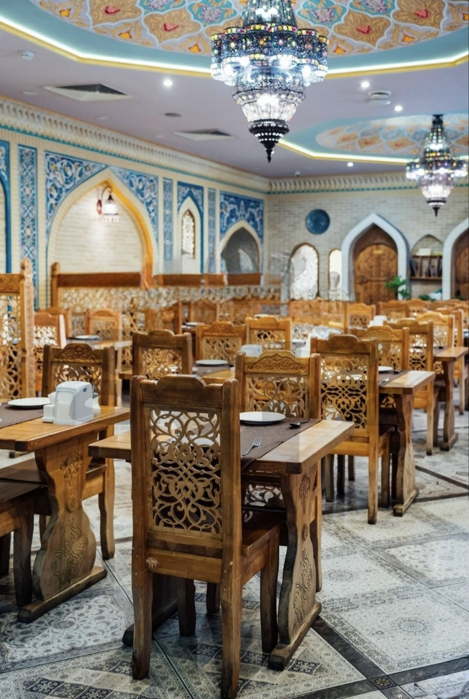

Photo Gallery
Experience the true taste of the East! We bring the feast to your door.
Restaurant & Atmosphere
Hall Zones
- Main Dining Hall
- Tables near panoramic windows
- Central booths for 4–6 guests
- VIP Halls
- East Hall (up to 12 guests)
- Khan Room (up to 20 guests)
- Tea Lounge




Main Dishes & Eastern Cuisine
Our Dishes
- Traditional Plov
- Festive Plov
- Lamb Kazan Kebab
- National Delicacies
- Traditional Beshbarmak
- Dapanji with Dough


Directions to Our Restaurant
- Arrive at Dostyk Street near the central park area.
- Look for the traditional illuminated Dastarkhan sign.
- Free guest parking is available behind the main building.